Июнь 2010 — II

Приобреди очень удобный гамак: сверху плоский, можно ходить, и внизу висячая часть для лежания. Всем нравится. Вот на этом фото нравится Сосискину.
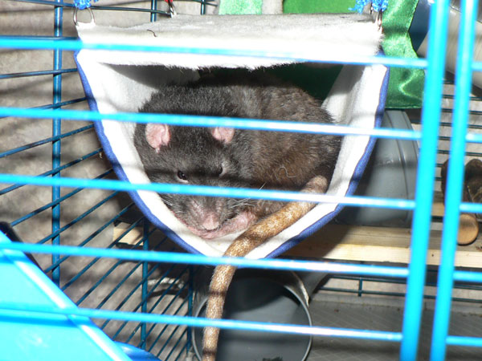
Здесь нравится Сене.
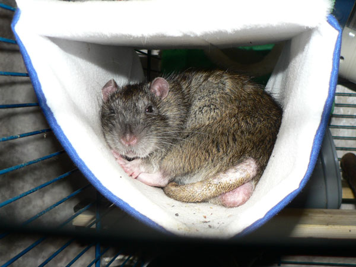
А тут щурится Иннотентий.

А это — Жорик принял форму гамака изнутри, тоже сверху плоский…
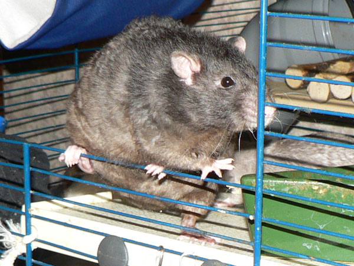
Сентябрь запутался, куда идти.

Кеща отдыхает.
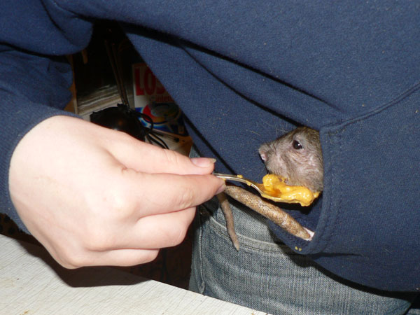
А это — дон Рэба в кармане у Тани сидит.

Он же с Жориком.
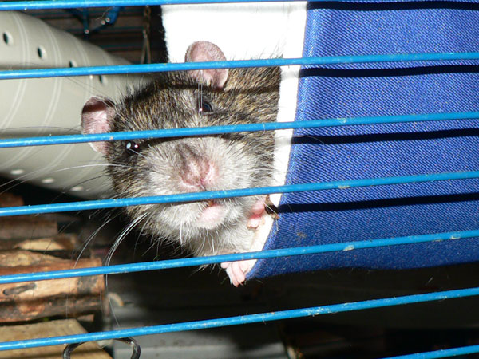
Кеша: — Чего?

Оба мелких (растут, однако, уже вымахали ничего так…).
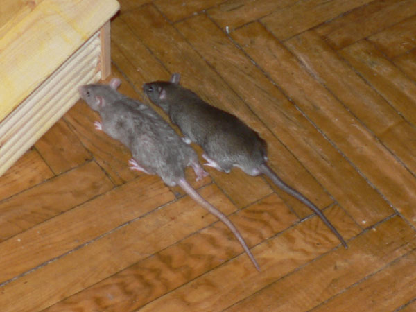
Они же. Слева — Циклон Б, справа — Терабайт.
Наглядная
иллюстрация, зачем брать мелких по двое.

Во время уборки крысы недовольно шарятся по полу вокруг.
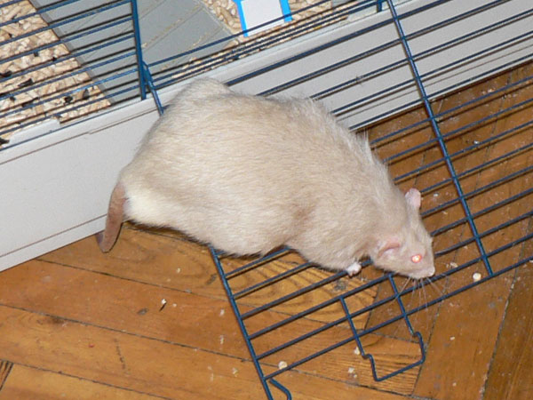
Жорик куда-то направился.

Пасючьи гены дают знать: Кеша смотрит на балкон.

— Может, уйти на свежий вохдух?
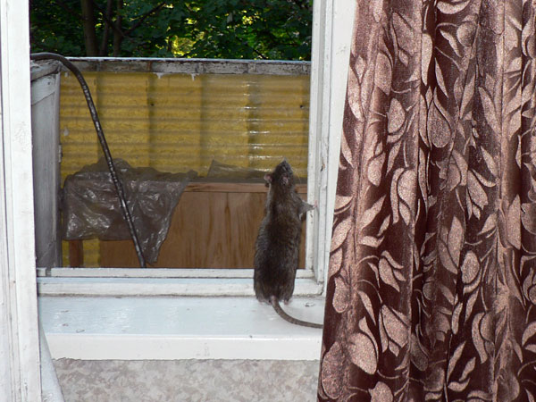
— А сверху — ваще деревья!
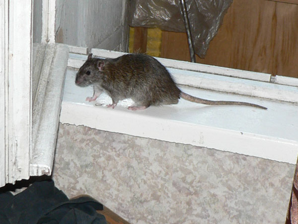
— Но если подумать…

— Нас и здесь неплохо кормят ©
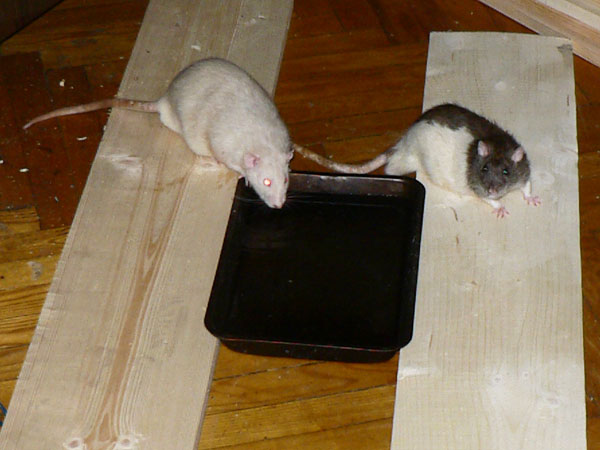
Ванночка с водой — уже началась жара. Жорик и дон Румата.

Поели, теперь можно и поспать…
Дон Ркмата слева,
Сосискин на заднем плане, в миске — Циклончик.
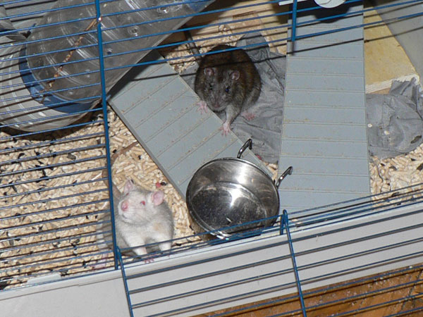
Иннокентий и Сосискин подволокли пустую кормушку к дверце и как бы намекают, что ее надо чем-то наполнить.

Циклон Б у таниного компа.
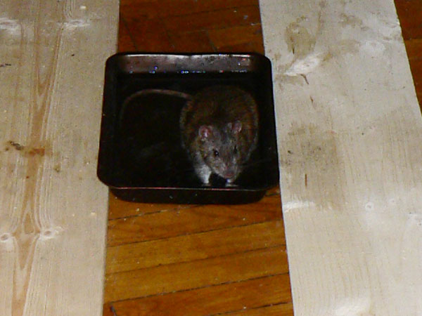
Иннокентий — самый водолюбивый крыс из всех. Остальных и не загнать…

…а Кеша радостно сидит в воде, охлаждается.

Сеня: — Ты чё, лебедь, что ли?